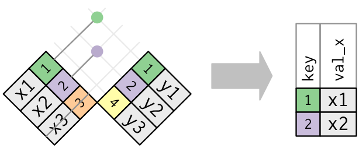

8 Relational Data
Data analysis rarely involves only a single table of data. Typically you have multiple tables of data, which combined, answer the questions at hand. Collectively, multiple tables of data are called relational data because it is the relations, not just the individual datasets, that are important. Relations are always defined between a pair of tables. All other relations are built up from this simple idea. A key is a variable, or set of variables, that uniquely identifies an observation and links tables together.
To work with relational data you need verbs that work with pairs of tables. There are three families of verbs designed to work with relational data:
Mutating joins, which add new variables to one data frame from matching observations in another.
Filtering joins, which filter observations from one data frame based on whether or not they match an observation in the other table.
Set operations, which treat observations as if they were set elements.
The most common place to find relational data is in a relational database management system (or RDBMS), a term that encompasses almost all modern databases. If you’ve used a database before, you’ve almost certainly used SQL. A key is a variable, or set of variables, that uniquely identifies an observation.

x
#> # A tibble: 3 x 2
#> key val_x
#> <dbl> <chr>
#> 1 1 x1
#> 2 2 x2
#> 3 3 x3
y
#> # A tibble: 3 x 2
#> key val_y
#> <dbl> <chr>
#> 1 1 y1
#> 2 2 y2
#> 3 4 y38.1 Mutating Joins
A mutating join allows you to combine variables from two tables. It first matches observations by their keys, then copies across variables from one table to the other. Like mutate(), the join functions add variables to the right, so if you have a lot of variables already, the new variables won’t get printed out.
Inner Joins
- inner join keeps all observations in common between x and y

inner_join(x, y)
#> Joining, by = "key"
#> # A tibble: 2 x 3
#> key val_x val_y
#> <dbl> <chr> <chr>
#> 1 1 x1 y1
#> 2 2 x2 y2by parameter.
Outer Joins
- left join keeps all observations in x append columns from y
- right join keeps all observations in y append columns from x
- full join keeps all observations in x and y

left_join(x, y, by = "key")
#> # A tibble: 3 x 3
#> key val_x val_y
#> <dbl> <chr> <chr>
#> 1 1 x1 y1
#> 2 2 x2 y2
#> 3 3 x3 <NA>
right_join(x, y, by = "key")
#> # A tibble: 3 x 3
#> key val_x val_y
#> <dbl> <chr> <chr>
#> 1 1 x1 y1
#> 2 2 x2 y2
#> 3 4 <NA> y3
full_join(x, y, by = "key")
#> # A tibble: 4 x 3
#> key val_x val_y
#> <dbl> <chr> <chr>
#> 1 1 x1 y1
#> 2 2 x2 y2
#> 3 3 x3 <NA>
#> 4 4 <NA> y3left_join and right_join are interchangeable with the arguments reversed. The only difference is the order of the columns in the resulting data frame.
left_join(x, y, by = "key")
#> # A tibble: 3 x 3
#> key val_x val_y
#> <dbl> <chr> <chr>
#> 1 1 x1 y1
#> 2 2 x2 y2
#> 3 3 x3 <NA>
right_join(y, x, by = "key")
#> # A tibble: 3 x 3
#> key val_y val_x
#> <dbl> <chr> <chr>
#> 1 1 y1 x1
#> 2 2 y2 x2
#> 3 3 <NA> x38.1.1 Duplicate keys
There are many cases where a single key does not uniquely identify an observation.
One-to-Many

Many-to-Many

8.1.2 Multi-Column Keys
By default all variables that are in both tables. To specify a subset of variables for the key use the by parameter.
x <- tribble(
~id, ~yq, ~question,
1, "2018Q1", "Yes",
1, "2018Q2", "No",
2, "2018Q1", "Yes",
3, "2018Q1", "Yes",
3, "2018Q2", "Yes"
)
y <- tribble(
~id, ~yq, ~question,
1, "2018Q2", "Method1",
2, "2018Q1", "Method2",
2, "2018Q2", "Method2",
3, "2018Q2", "Method2",
4, "2018Q1", "Method1"
)
# full
full_join(x, y) # probably not what we want
#> Joining, by = c("id", "yq", "question")
#> # A tibble: 10 x 3
#> id yq question
#> <dbl> <chr> <chr>
#> 1 1 2018Q1 Yes
#> 2 1 2018Q2 No
#> 3 2 2018Q1 Yes
#> 4 3 2018Q1 Yes
#> 5 3 2018Q2 Yes
#> 6 1 2018Q2 Method1
#> # ... with 4 more rows
full_join(x, y, by = c("id", "yq"))
#> # A tibble: 7 x 4
#> id yq question.x question.y
#> <dbl> <chr> <chr> <chr>
#> 1 1 2018Q1 Yes <NA>
#> 2 1 2018Q2 No Method1
#> 3 2 2018Q1 Yes Method2
#> 4 3 2018Q1 Yes <NA>
#> 5 3 2018Q2 Yes Method2
#> 6 2 2018Q2 <NA> Method2
#> # ... with 1 more row8.1.3 Duplicate Non-Key Columns
By default if there are variables in both data frames that are not used as a key the common variables names will be appended with ".x" and ".y" corresponding the the first and second argument. If you want to change these use the suffix parameter.
full_join(x, y, by = c("id", "yq"), suffix = c("_1", "_2"))
#> # A tibble: 7 x 4
#> id yq question_1 question_2
#> <dbl> <chr> <chr> <chr>
#> 1 1 2018Q1 Yes <NA>
#> 2 1 2018Q2 No Method1
#> 3 2 2018Q1 Yes Method2
#> 4 3 2018Q1 Yes <NA>
#> 5 3 2018Q2 Yes Method2
#> 6 2 2018Q2 <NA> Method2
#> # ... with 1 more row8.1.4 Different Key Column Names
A common occurrence is for the tables you wish to join to have different variable names. You can either change the variable names so the do match with rename() or you can use the by parameter to indicate which variable name in x matches the variable name in y.
x <- tribble(
~id, ~yq, ~question,
1, "2018Q1", "Yes",
1, "2018Q2", "No",
2, "2018Q1", "Yes",
3, "2018Q1", "Yes",
3, "2018Q2", "Yes"
)
y2 <- tribble(
~id, ~yearquarter, ~question,
1, "2018Q2", "Method1",
2, "2018Q1", "Method2",
2, "2018Q2", "Method2",
3, "2018Q2", "Method2",
4, "2018Q1", "Method1"
)
# inner
full_join(x, y2, by = c("id", "yq" = "yearquarter"), suffix = c("_1", "_2"))
#> # A tibble: 7 x 4
#> id yq question_1 question_2
#> <dbl> <chr> <chr> <chr>
#> 1 1 2018Q1 Yes <NA>
#> 2 1 2018Q2 No Method1
#> 3 2 2018Q1 Yes Method2
#> 4 3 2018Q1 Yes <NA>
#> 5 3 2018Q2 Yes Method2
#> 6 2 2018Q2 <NA> Method2
#> # ... with 1 more row8.2 Filtering Joins
Filtering joins match observations in the same way as mutating joins, but affect the observations, not the variables. There are two types:
- semi join keeps all observations in x that have a match in y
- anti join drops all observations in x that have a match in y


Semi-joins are useful for matching filtered summary tables back to the original rows. The inverse of a semi-join is an anti-join. An anti-join keeps the rows that don’t have a match. Anti-joins are useful for diagnosing join mismatches.
orig <- tribble(
~id, ~yq, ~question,
1, "2018Q1", "Yes",
1, "2018Q2", "No",
2, "2018Q1", "Yes",
3, "2018Q1", "Yes",
3, "2018Q2", "Yes"
)
val <- tribble(
~id, ~yq, ~question,
1, "2018Q1", "No",
1, "2018Q2", "No",
2, "2018Q1", "Yes",
3, "2018Q3", "No",
3, "2018Q2", "Yes"
)
semi_join(orig, val, by = c("id", "yq", "question"))
#> # A tibble: 3 x 3
#> id yq question
#> <dbl> <chr> <chr>
#> 1 1 2018Q2 No
#> 2 2 2018Q1 Yes
#> 3 3 2018Q2 Yes
anti_join(orig, val, by = c("id", "yq", "question"))
#> # A tibble: 2 x 3
#> id yq question
#> <dbl> <chr> <chr>
#> 1 1 2018Q1 Yes
#> 2 3 2018Q1 Yes8.3 Set Operations
The final type of two-table verb are the set operations. These operations work with a complete row, comparing the values of every variable. These expect the x and y inputs to have the same variables, in the same order, and treat the observations like sets:
intersect(x, y): return only observations in bothxandy.union(x, y): return unique observations inxandy.setdiff(x, y): return observations inx, but not iny.
Given this simple data:
The four possibilities are:
intersect(df1, df2)
#> # A tibble: 1 x 2
#> x y
#> <dbl> <dbl>
#> 1 1 1
# Note that we get 3 rows, not 4
union(df1, df2)
#> # A tibble: 3 x 2
#> x y
#> <dbl> <dbl>
#> 1 1 2
#> 2 2 1
#> 3 1 1
setdiff(df1, df2)
#> # A tibble: 1 x 2
#> x y
#> <dbl> <dbl>
#> 1 2 1
setdiff(df2, df1)
#> # A tibble: 1 x 2
#> x y
#> <dbl> <dbl>
#> 1 1 2